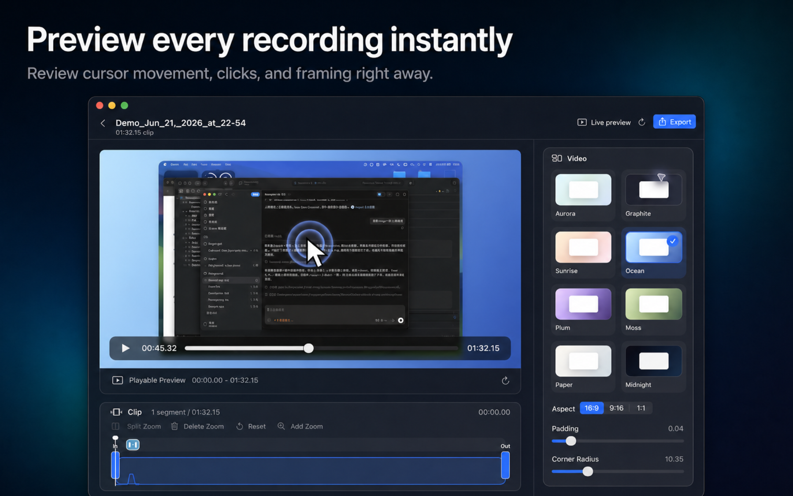
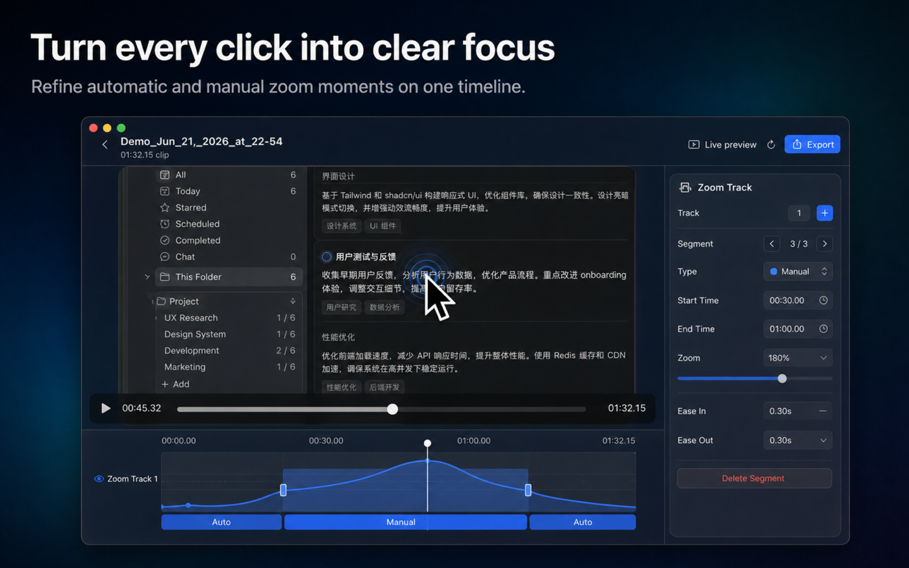
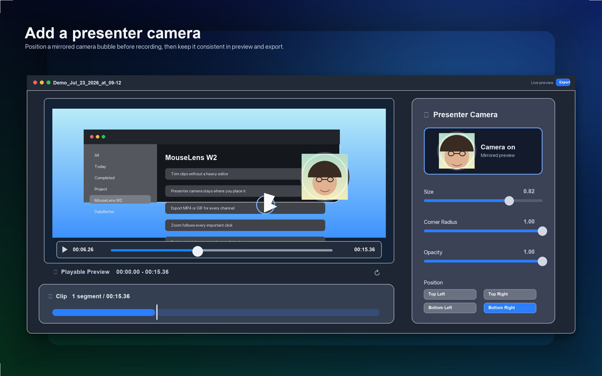
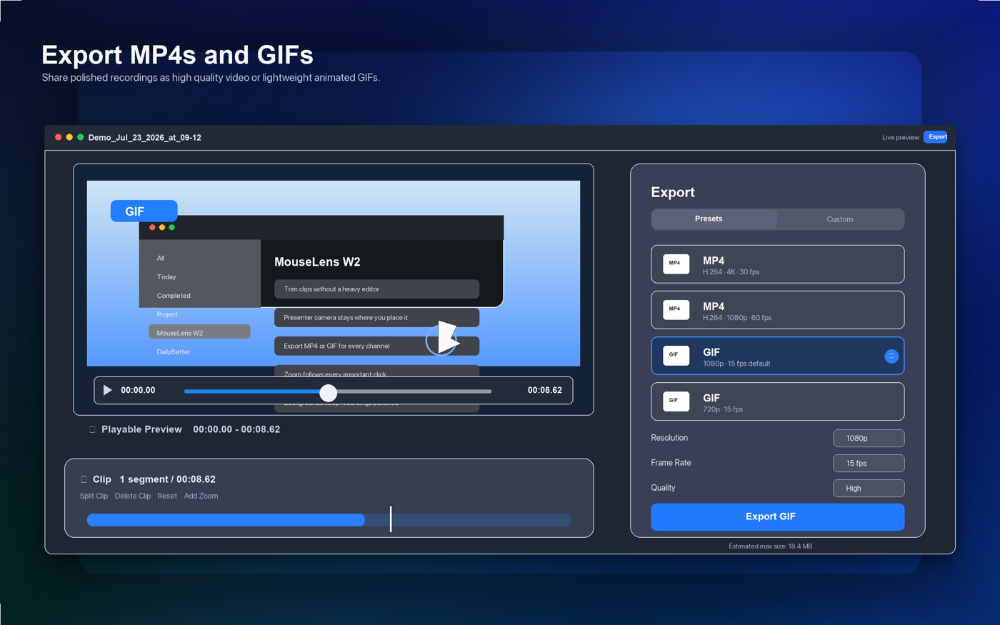

Smart Zoom
Automatically guides the viewer toward clicks and important areas, with editable zoom segments when you need control.
MouseLens turns ordinary screen recordings into polished walkthroughs with smart zoom, clear cursor emphasis, captions, presenter camera, and MP4 or GIF export.

Live editor
Adjust zoom, captions, presenter camera, backgrounds, and export without opening a heavy video editor.
MouseLens stays intentionally narrow: record interaction, clarify the pointer, guide attention, and export fast.
Automatically guides the viewer toward clicks and important areas, with editable zoom segments when you need control.
Use clear system arrows or expressive pointer styles. Cursor size and position stay consistent in preview and export.
Add a mirrored camera bubble, place it before recording, and keep that exact layout through preview and export.
Generate editable captions from recorded speech and burn them into MP4 or GIF exports when needed.
A fast workflow for product demos, tutorials, release notes, support replies, and social clips.
Capture a screen or window, with optional microphone audio and presenter camera.
Review immediately, trim the clip, adjust backgrounds, zoom moments, captions, and cursor style.
Export crisp MP4 videos or lightweight GIFs for docs, changelogs, websites, and social posts.

Let MouseLens create focus moments automatically, then split, delete, or add zoom segments on the timeline.

Place your presenter bubble before recording and keep it consistent while editing and exporting.

Export high-quality MP4 for video platforms or GIF for short demos, issue reports, and release notes.
The editor uses the same visual rules for captions, cursor, presenter camera, backgrounds, and zoom.
MouseLens does not require an account and does not upload recordings to a server. Your screen recordings, project files, pointer data, audio, camera video, and exports stay on your Mac unless you choose to share them.